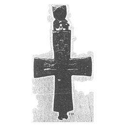
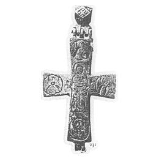

Catalog › CE-0105 · KHA1900-230
Encolpion de bronz cu Răstignirea (email) și Maica Domnului Orantă pe revers
XII–XIII в. (1101–1300) · ținutul Kaniv, gubernia Kiev, Ucraina · Colecția B. I. și V. N. Khanenko, Kiev, inv. nr. 230–231 (numerotarea colecției Khanenko)
double-sided reliquary cross (enkolpion), bronz; XII–XIII в. (1101–1300); find spot unknown; kept at Colecția B. I. și V. N. Khanenko, Kiev.




Identificare
- Categorie
- Encolpion bivalv (relicvar)
- Material
- Bronz
- Tehnică
Iconografie
- Descriere avers
- Pe față, în relief, pe alocuri umplut cu email, Mântuitorul răstignit; de o parte și de alta, Maica Domnului și Ioan Teologul; sus soarele și luna.
- Revers
- Maica Domnului Orantă
- Descriere revers
- Pe revers, Maica Domnului în picioare, cu brațele ridicate (orantă); de o parte și de alta, în medalioane, Ioachim și Ana; sus și jos sfinți necunoscuți. Urechea este decorată cu ornament în formă de crucea Sf. Andrei.
- Inscripții
- Ioachim (Ioak.), Ana (Ana)
Datare și atribuire
- Datare
- XII–XIII в. (1101–1300)
- Centru
- Necunoscut
Descoperire
- Regiune
- ținutul Kaniv, gubernia Kiev
- Țară
- Ucraina
- Context
- Necunoscut
- Coordonate
- 50.4421° N, 30.5115° E
- Precizia locului
- Loc de păstrare (loc de descoperire incert)
Păstrare și referințe
- Colecție
- Colecția B. I. și V. N. Khanenko, Kiev
- Nr. inventar
- nr. 230–231 (numerotarea colecției Khanenko)
- Bibliografie
- B. I. și V. N. Khanenko, Древности русскія. Кресты и образки, вып. II (Собраніе Б. И. и В. Н. Ханенко), Kiev, 1900 [Khanenko 1900], cat. nr. 230–231, Tabl. XIX, reprodusă la Табл. XIX, fig. 230, 231 (planșa de la p. 16 a PDF-ului).
- Figura
- Табл. XIX, fig. 230, 231
- Planșe
- Khanenko 1900, Табл. XIX (planșă fără paginație tipărită; p. 16 în PDF)
- Observații
- Datare după Khanenko: XII–XIII в. Ureche masivă; capete drepte, ușor lărgite. Numerele 230 și 231 corespund celor două fețe. Locul descoperirii nu e cunoscut cu precizie; punctul de pe hartă marchează locul de păstrare (Colecția B. I. și V. N. Khanenko), nu locul descoperirii. Coordonate: nu sunt date în sursă.
Citare: Corpus Encolpiorum, CE-0105, Encolpion de bronz cu Răstignirea (email) și Maica Domnului Orantă pe revers, https://vitaliejosanu1979-ux.github.io/primul-meu-proiect/piese/KHA1900-230/ (accesat 2026-10-17).